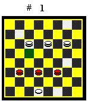

TRE DAME E UNA PEDINA CONTRO TRE DAME
Il finale di tre dame e una pedina contro
tre dame presenta una casistica molto vasta, a seconda della posizione
reciproca delle dame e della pedina. Lo scopo principale del Bianco è
damare la pedina, mentre il Nero deve impedirglielo. Durante la manovra
entrambi devono cercare cambi o baratti che portino a un finale favorevole
di due dame e una pedina contro due dame, che di fatto è il punto
di riferimento per giocare questo finale complesso. Una norma di carattere
generale, sempre valida, è quella di mantenere le dame unite.

Le posizioni più frequenti in gioco vivo sono quelle in cui il Bianco ha la pedina sulla base o sulla sponda, bloccata dalle tre dame nere, con le dame bianche più lontane, come nel Diagramma 1.Tutti i finali di questo tipo sono
pari. Il Bianco ha una gran varietà di attacchi, di cui non è
possibile rendere conto in poche linee. In ogni caso il Nero, con manovra
attenta, riesce a impedire l'avanzata della pedina e ad evitare un cambio
o un baratto che lo immetta in un finale perdente.